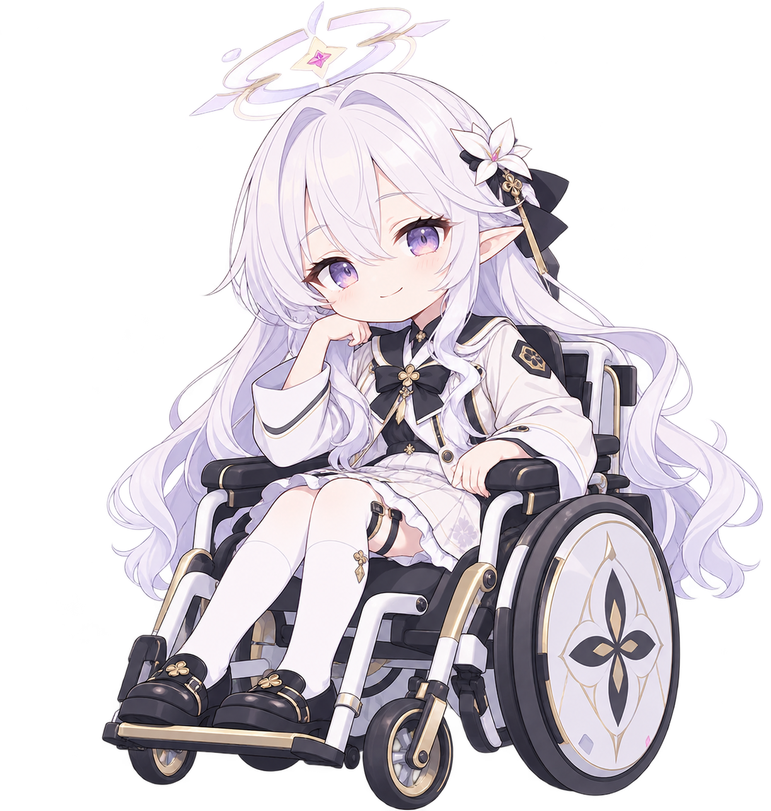

<!doctype html>
<html lang="ko">
<meta charset="utf-8">
<meta name="viewport" content="width=device-width, initial-scale=1">
<title>히마리 애니메이션 시안</title>
<style>
  * { box-sizing: border-box; }
  body { margin: 0; font-family: 'Segoe UI', sans-serif; color: #26304a; background: #eef1f8; }
  main { max-width: 1100px; margin: auto; padding: 32px; }
  h1 { font-size: 24px; margin: 0 0 8px; }
  p { line-height: 1.6; }
  .layout { display: grid; grid-template-columns: 1fr 300px; gap: 24px; }
  .stage { min-height: 620px; position: relative; overflow: hidden; border-radius: 20px; background: linear-gradient(135deg,#dce5f5,#f7f4fa); }
  .stage::after { content: ''; position: absolute; bottom: 28px; left: 10%; right: 10%; height: 1px; background: #bbc6da; }
  .character { position: absolute; height: min(78%, 500px); width: auto; bottom: 28px; left: 50%; transform: translateX(-50%); transform-origin: 50% 100%; animation: breathe 4s ease-in-out infinite; }
  .stage[data-state="waiting"] .character { animation: wait 2.4s ease-in-out infinite; }
  .stage[data-state="speaking"] .character { animation: speak 1.2s ease-in-out infinite; }
  .stage[data-state="listening"] .character { animation: listen 3s ease-in-out infinite; }
  .stage[data-state="sleeping"] .character { animation: sleep 6s ease-in-out infinite; filter: brightness(.88); }
  @keyframes breathe { 0%,100% { transform: translateX(-50%) scale(1); } 50% { transform: translateX(-50%) scale(1.007,1.012); } }
  @keyframes wait { 0%,100% { transform: translateX(-50%) rotate(0); } 50% { transform: translateX(-50%) rotate(-1deg); } }
  @keyframes speak { 0%,100% { transform: translateX(-50%) scale(1); } 50% { transform: translateX(-50%) scale(1.006,1.012); } }
  @keyframes listen { 0%,100% { transform: translateX(-50%) rotate(0); } 50% { transform: translateX(-50%) rotate(1deg); } }
  @keyframes sleep { 0%,100% { transform: translateX(-50%) rotate(-2deg); } 50% { transform: translateX(-50%) rotate(-1deg) scale(1,1.008); } }
  aside { background: white; border-radius: 20px; padding: 22px; align-self: start; }
  label { display: block; font-weight: 600; margin: 20px 0 8px; }
  select, button { width: 100%; padding: 10px; border: 1px solid #cad1e0; border-radius: 8px; background: white; font: inherit; }
  button { margin-top: 16px; cursor: pointer; background: #536caa; color: white; border: 0; }
  .note { font-size: 13px; color: #56627a; }
  .bubble { position: absolute; top: 24px; left: 24px; max-width: 80%; border-radius: 16px; padding: 12px 16px; background: white; box-shadow: 0 5px 20px #64769a22; }
  @media (max-width: 720px) { .layout { grid-template-columns: 1fr; } .stage { min-height: 470px; } }
  @media (prefers-reduced-motion: reduce) { .character { animation: none !important; } }
</style>
<main>
  <h1>히마리 애니메이션 시안</h1>
  <p>서버 연결 없이 캐릭터의 크기와 움직임을 살펴보는 초기 미리보기입니다.</p>
  <div class="layout">
    <div class="stage" id="stage" data-state="idle">
      <div class="bubble" id="bubble" aria-live="polite">안녕하세요, 선생님.</div>
      
    </div>
    <aside>
      <label for="state">앱 상태</label>
      <select id="state"><option value="idle">가만히</option><option value="listening">듣는 중</option><option value="waiting">기다리는 중</option><option value="speaking">말하는 중</option><option value="sleeping">졸림</option></select>
      <label for="mood">서버 표정 이벤트</label>
      <select id="mood"><option>neutral</option><option>happy</option><option>excited</option><option>sad</option><option>surprised</option><option>thinking</option><option>embarrassed</option><option>worried</option></select>
      <button id="demo">가짜 대화 재생</button>
      <p class="note" id="status">표정: neutral</p>
      <p class="note">초기 시안: 한 장의 그림 전체를 움직입니다. 눈 깜빡임, 입 모양과 표정별 그림은 아직 제작되지 않았으며, 표정 선택은 이벤트 표시만 바꿉니다.</p>
    </aside>
  </div>
</main>
<script>
  const stage = document.querySelector('#stage'), state = document.querySelector('#state');
  const mood = document.querySelector('#mood'), status = document.querySelector('#status'), bubble = document.querySelector('#bubble');
  let timers = [];
  function cancelDemo() { timers.forEach(clearTimeout); timers = []; }
  function setState(value) { state.value = value; stage.dataset.state = value; }
  function setMood(value) { mood.value = value; status.textContent = '표정 이벤트: ' + value + ' (표정 원화 미적용)'; }
  state.addEventListener('change', () => { cancelDemo(); setState(state.value); });
  mood.addEventListener('change', () => { cancelDemo(); setMood(mood.value); });
  document.querySelector('#demo').addEventListener('click', () => {
    cancelDemo(); setState('waiting'); setMood('thinking'); bubble.textContent = '잠시만 기다려 주세요…';
    timers.push(setTimeout(() => { setState('speaking'); setMood('happy'); bubble.textContent = '다 됐답니다, 선생님.'; }, 2000));
    timers.push(setTimeout(() => { setState('idle'); setMood('neutral'); }, 6000));
  });
</script>
</html>
